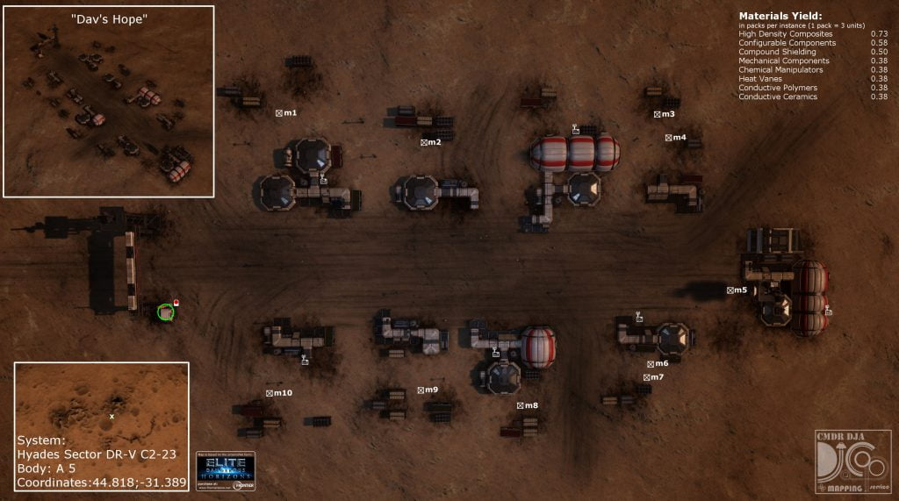

Dav’s Hope is an abandoned settlement in the Hyades Sector DR-V c2-23 system on body A 5, at 50.5322, 137.4363 (in Live/4.0) or at 44.8181, -31.3892 (in Legacy/3.8).
The location of this site can be found by following the three nearby listening posts located in:
Col 285 Sector MY-O b7-2 / Col 285 Sector GN-H b11-0 / Pic Tok
LISTENING POST SIGNAL DATA
…Compromised Signal AAS-630-A Detected…Matches signal detected at listening posts: (col 285 sector gn-h b11-0, pic tok)
Approximate Signal Range: 54-57 LY
…can’t get away with this…… long:147.4188…buried alive…
…Beacon Signal Lost…
[Note for 3.8] Codex displays values for 4.0, it should read: long:-31.389378
LISTENING POST SIGNAL DATA
…Compromised Signal AAS-630-B Detected…Matches signal detected at listening posts: (col 285 sector my-0 b7-2, pic tok)
Approximate Signal Range: 46-48 LY
…can’t get away with this…… lat:50.4483…buried alive…
…Beacon Signal Interrupted…
[Note for 3.8] Codex displays values for 4.0, it should read: lat:44.818069
LISTENING POST SIGNAL DATA
…Compromised Signal AAS-630-C Detected…Matches signal detected at listening posts: (col 285 sector my-0 b7-2, col 285 sector gn-h b11-0)
Approximate Signal Range: 32-34 LY
…can’t get away with this…… a 5 …buried alive…
…Message Corrupted…

An automated alert voice indicates that the cause of the evacuation was a compromise of the mine structure.
The miners clearly abandoned the settlement in a hurry as there are Engineer Materials scattered around the ground. At the entrance to the settlement there is a Data Point which may be scanned for an Intel Package, and for Engineer Data.
Around the settlement there are six Settlement Comms Log Uplink points, scanning them gives more background:
MINING TEAM 6 1/6
Personal data recorder:
Franklin James – Foreman – Mining Team 6Team 6 to base, what the hell was that?! It felt like the whole planet was going to come down on top of us! Base do you read me? Base are you there?
Guys, pack it up, we’re heading back to base! Something’s not right here, comms are down and with that last quake, I’m calling it.
Follow me, we’ll head for shaft 48, there’s a wired comms station there, maybe we can find out what’s happening.
MINING TEAM 6 2/6
Sent: 23 May 3286 15:19 UTC
To: Nicholas Baker: Corporate LiaisonSite Report Log:
Sir, seismic activity has increased and we’re seeing cave-ins in sections 3, 4 and 6 now. I would like to request permission to pull all mining teams out until we can secure the site.
Lucy Minneux: Site co-ordinator
Sent: 23 May 3286 15:30 UTC
To: Lucy Minneux: Site co-ordinatorHave you lost your senses? Do you know how much it will cost us to shut this place down while you “secure” the site? We’ll lose billions of credits every hour. I can’t authorise that. No, the miners keep on going, they know vhat they signed up for.
Nicholas Baker: Corporate Liaison
Sent: 23 May 3286 15:32 UTC
To: Nicholas Baker: Corporate LiaisonBut sir! With this level of activity it could bring the whole installation down, not just the mine shafts, we have to evacuate, the site is no longer viable. It’s just too dangerous.
Lucy Minneux: Site co-ordinator
Sent: 23 May 3286 15:34 UTC
To: Lucy Minneux: Site co-ordinatorWho do you think you’re talking to Miss Minneux? What you need to do is do your job or we’ll have to renegotiate your contract. I trust I have made myself clear.
Nicholas Baker: Corporate Liaison
MINING TEAM 6 3/6
Shaft 48 Call Log:Team 6 to base, can you read us? What the hell is happening?
We’re trying to evacuate section 4, but all access tunnels must have collapsed in that last quake. We’re stuck down here.
Repeat, access has collapsed, team trapped in Shaft 48. When can we expect a rescue crew?
Base are you reading us?
MINING TEAM 6 4/6
Sent: 23 May 3286 21:59 UTC
To: Nicholas Baker: Corporate LiaisonSir, Team 6 did not report in at shift change and our survey team have reported that the cave-ins are more widespread than we first feared. There’s a very high possibility that they are trapped somewhere in section 4.
I’m prepping the rescue team now. They should be ready to leave within the hour.
Lucy Minneux: Site co-ordinator
MINING TEAM 6 5/6
Corporate Memo:
Sent: 26 May 3286 06:23 UTC
Ref: Mining Operations no longer viable.Site shut down with immediate effect. All resources and confidential materials to be move to alpha site.
Regarding ongoing situation: Mining Team 6 Missing, considered acceptable loss. No further action.
Commence site shutdown immediately.
Message ends.
MINING TEAM 6 6/6
Sent: 26 May 3286 15:30 UTC
To: Lucy Minneux: Site co-ordinatorIt seems like corporate agree with you, Miss Minneux. This site is no longer viable and is now closed. Shut it down. Shut it all down now. Give the order to detonate the charges, collapse the site.
Nicholas Baker: Corporate Liaison
Sent: 26 May 3286 15:35 UTC
To: Nicholas Baker: Corporate LiaisonYou can’t do that, damn you. We have twenty people down here! You can’t just leave them to die like this. They have families, children. What are you going to tell them?
Those charges are only meant to be used at the end of the operation. We have to do something to get our people out first! We can’t just leave them buried alive down there. We have a responsibility!
Lucy Minneux: Site co-ordinator
Sent: 26 May 3286 15:35 UTC
To: Lucy Minneux: Site co-ordinatorMy responsibility is to this corporation and its shareholders. There are plenty more miners to take their place, and yours for that matter. If you won’t follow orders, we’ll just find someone else that will. Now do it!
Nicholas Baker: Corporate Liaison